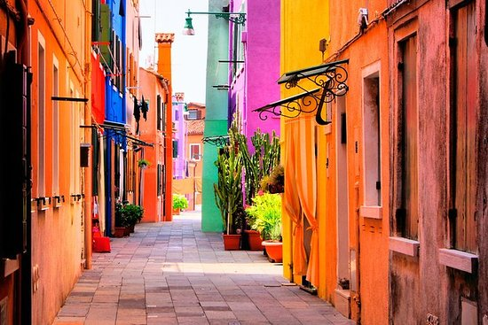

Dag 3
11:00
Semi-onafhankelijke tour door Murano en Burano-eilanden
€20,-
Deze activiteit duurt 4 uur.
Dit is de leukst activiteit die we vandaag gaan doen.
Wat houdt de tour in?
4 uur lang naar verschillende eilanden van Venetië
Kom meer te weten over de rijke geschiedenis van Murano en het erfgoed van het maken van glas
Bewonder de felgekleurde huizen van het eiland Burano
Reis per motorboot en bekijk de bezienswaardigheden vanaf het water
Semi-onafhankelijke tour biedt meer flexibiliteit
Dit is het perfecte uitje voor als je de eilanden Murano en Burano wilt bezoeken
Soms word er uitleg gegeven de uitleg is in het Engels, Spaans, Frans, Duits en Italiaans.
tripadvisor
Dit is de plek waar het begint en eindigt
15:00
Je kunt op dit moment kiezen wat je gaat doen.
Als je meer van de natuur houdt dan zal ik hier
Giardini Pubblici
Als je naar dit park gaat dan moet je wel met de boot anders dan mis je de volgende activiteit
--------------------------
Als je naar een winkelcentrum wilt dan zou ik hier
T Fondaco Dei Tedeschi

Je kunt lopend naar het winkelcentrum Dat is ongeveer 15min maar je kunt ook met de boot.
16:30
Klassieke gondelvaart

€31,-
Deze activiteit is iets wat je zoiezo een keer moet doen in Venetië. (Dat hoeft niet perse deze gondelvaart te zijn maar deze is wel mooi.)
Wat houdt deze Gondelvaart in?
Geniet van Venetië vanuit uw speciale plek aan boord van een gondel en volg zijn zachte beweging. Maak een tochtje langs het Canal Grande en de kleinere grachten rond Piazza San Marco en Rialto.
Deel een gondeltocht met maximaal 5 andere mensen en vaar door het water met een ervaren gondelier die u leidt door de prachtige mysterieuze grachten van Venetië tijdens een rustige 30 minuten durende tocht.
tripadvisor
17:00
Dogepaleis
Normaal
€20,-
tripadvisor
-------------------------
Geen wachtrij + Rondleiding
€36,-
tripadvisor
-------------------------
Deze activiteit hoeft niet het is alleen voor als je nog meer wilt zien van Venetië.
Het is een heel mooi paleis mensen die er zijn geweest raden je ook aan om in de wapenkamer en de oudegevangenis een kijkje te nemen.
Er zijn heel veel mooie schilderijen en alle kamers zijn ook mooi geschilderd
18:30
Ristorante Alle Corone
De prijzen kan ik niet vertelen want die verschillen wat je koopt.
In dit restaurant word echt italiaans gekookt
Je kunt dit ook om een andere tijd doen maar dit is maar een voorbeeld.
tripadvisor
Verblijf
Als je klaar bent met eten kun je nog even rond kijken of weer terug naar je verblijf plek gaan.